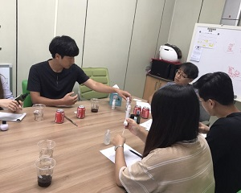
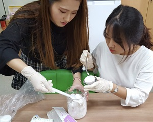
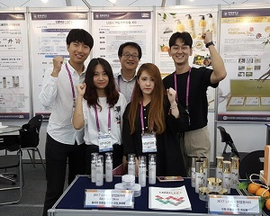
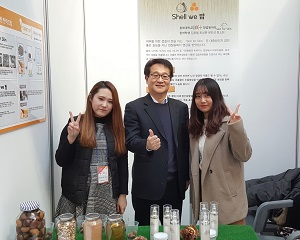
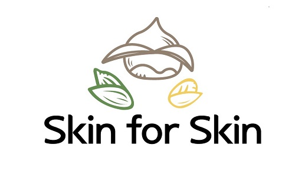
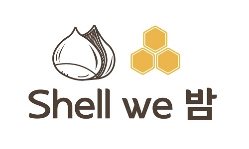

The first Skin is another word for the shell, and the back skin represents the human skin.
I think the shells that we didn't use are new materials for skin care, so I used them to develop cosmetics.
The team members consisted of students in the Department of Chemical Engineering who were interested in cosmetics.
   This symbolizes chestnut shell and honey.
 We made 'shell we bam' by mixing chestnut shell and chestnut honey to create a synergy effect.
The function of chestnut shell is to inhibits the activity of elastase, which is the cause of skin aging.
Chestnut honey has antioxidant and antimicrobial effects. As a result, our product, "Shell We BAM," makes your skin clean and elastic.
Skin & lotion reduces wrinkles, helps prevent aging, and makes skin clearer. It also has anti-bacterial action.
Wrinkle-hiding elasticity cream that lightens the face as if it were wrapped tightly between wrinkles by turn on light on skin.
The goal is to make cosmetics brands that specialize in the use of shells by using egg shell membrane, shell of The green tea seed and rice bran.
We'll have to fix the price and market research because we've still made prototypes.